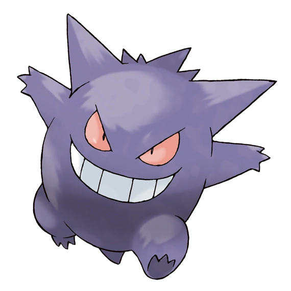
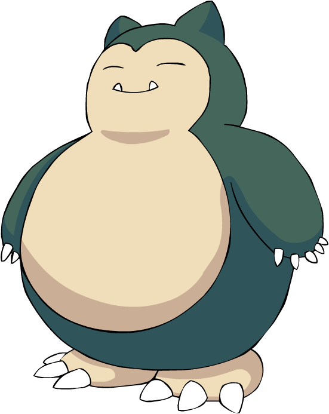

Gengar
Gengar es un Pokémon de tipo fantasma/veneno introducido en la primera generación. Es la evolución de Haunter.
Snorlax
Snorlax es un Pokémon de tipo normal introducido en la primera generación. A partir de la cuarta generación tiene una preevolución llamada Munchlax.
Charizard

Charizard es un Pokémon de tipo fuego/volador, introducido en la primera generación. Es la evolución de Charmeleon